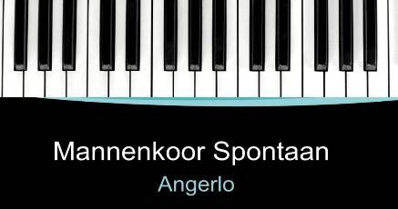

<nav id="nav" class="main-nav" aria-label="Hoofdmenu">
  <div class="nav-container">
    <a class="site-logo" href="../index.html" aria-label="Naar de homepage van Zanggroep Spontaan">
      
    </a>

    <button
      type="button"
      class="hamburger"
      id="hamburger"
      aria-label="Menu openen"
      aria-controls="navMenu"
      aria-expanded="false"
    >
      <span></span>
      <span></span>
      <span></span>
    </button>

    <ul class="nav-menu" id="navMenu">
      <li><a href="../index.html">Home</a></li>
      <li><a href="../pages/over.html">Over Spontaan</a></li>
      <li><a href="../pages/agenda.html">Agenda</a></li>
      <li><a href="../pages/media.html">Beeld en Geluid</a></li>
      <li><span class="nav-disabled" aria-disabled="true">Muziek en repertoire</span></li>
      <li><span class="nav-disabled" aria-disabled="true">Nieuws</span></li>
      <li><span class="nav-disabled" aria-disabled="true">Vrienden van Spontaan</span></li>
      <li><a href="../pages/contact.html">Contact</a></li>
      <li><span class="nav-disabled" aria-disabled="true">Leden</span></li>
    </ul>
  </div>
</nav>
